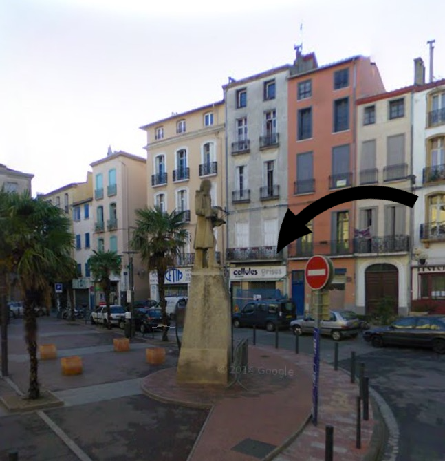
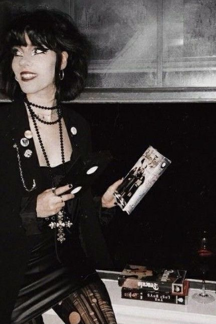

Toi et tes amies marchez allègrement dans la rue baignée de
soleil. Ce soleil typique du sud quand l'automne couvre les arbres et
que le ciel se teinte de roux et de brun. Une brise fraîche soulève
tes cheveux et rythme vos pas et vos rires entremêlés. Vous
descendez la rue de la loge, et passez devant l'office de tourisme.
Ce bâtiment te fascine. Typique du gothique méditerranéen, ponctué
de gargouilles hérissant le haut de la bâtisse, tu es toujours
happée par ce monument. Le sud est si profondément gothique. Tu as
mis du temps à le conscientiser. Tu as longtemps haï la chaleur et
ses corollaires : sudation excessive, privation de liberté et
parade de tocards huilés sur la plage. Mais le sud est bien plus que
tous ces poncifs récalcitrants réunis. Le sud renferme des secrets
que seuls les initiés ou ceux qui aiment regarder au-delà de la
surface peuvent percevoir.
Toi et tes amies marchez allègrement dans la rue baignée de
soleil. Ce soleil typique du sud quand l'automne couvre les arbres et
que le ciel se teinte de roux et de brun. Une brise fraîche soulève
tes cheveux et rythme vos pas et vos rires entremêlés. Vous
descendez la rue de la loge, et passez devant l'office de tourisme.
Ce bâtiment te fascine. Typique du gothique méditerranéen, ponctué
de gargouilles hérissant le haut de la bâtisse, tu es toujours
happée par ce monument. Le sud est si profondément gothique. Tu as
mis du temps à le conscientiser. Tu as longtemps haï la chaleur et
ses corollaires : sudation excessive, privation de liberté et
parade de tocards huilés sur la plage. Mais le sud est bien plus que
tous ces poncifs récalcitrants réunis. Le sud renferme des secrets
que seuls les initiés ou ceux qui aiment regarder au-delà de la
surface peuvent percevoir.
Emma mène la danse. Elle est vêtue d'un long trenchcoat noir en simili-cuir à la Matrix. Sa chevelure de jais douce comme le plumage d'un corbeau vogue au vent, et elle pointe d'une main manucurée de ténèbres dans la direction de la Place Rigaud.

Tu adores cette place. Colorée, elle t'évoque la pluralité du sud, ses contrastes et ses délices. Emma et toi voulez aller à Cellules Grises, la petite librairie fantastique de la ville. Nichée sur la placette, elle renferme les plus beaux trésors. Toutes les deux fanas de fantastiques, vous vous rendez régulièrement à Cellules Grises après le lycée pour acheter des pocket terreur. Surtout ceux d'Anne Rice ou de Stephen King. Mais aujourd'hui tu as envie de découvrir autre chose. Et puis c'est bientôt l'anniversaire d'Aude. Tu as aussi envie de lui faire plaisir et de repérer un livre qui serait à son goût. Aude, c'est la femme fatale du groupe. Alors que toi tu erres encore entre l'enfance et l'adolescence, Aude, elle, a totalement embrassé sa nature de séductrice. Et quel succès ! Vêtue d'un pantalon pattes d'eph prune et d'une veste moirée sombre, sa silhouette découpe le paysage coloré de sa présence charismatique. Tu rêverais d'être une Aude mais tu es déjà trop occupée à déchiffrer la page 1 du mode d'emploi de ton cerveau. Et enfin, il y a Soline, une âme pure et innocente qui se terre derrière une douce timidité mais qui le soir, se transforme en créature assoiffée de chair. Elle arpente les rues de ton village la nuit et elle ne rentre jamais seule, sous la capeline de la lune noire... Soline est aussi belle qu'elle ne se doute pas de sa beauté. C'est celle qui se vêt de façon la plus lumineuse du groupe. Enfants, vous avez fait les 400 coups ensemble. Vous avez inventé et joué à tous les jeux possibles, avez écrit et filmé des courts-métrages horrifiques, mais aujourd'hui, alors que tu approches les 16 ans, tu sais que les choses changent. Soline a une vie dense et secrète la nuit, et toi tu ne peux qu'en rêver. Aude et Emma ont aussi du succès relationnellement parlant. Toi tu passes ton temps à contempler de loin les âmes qui te font vibrer.
Arrivées sur la placette, Emma hâte le pas et ouvre la petite porte du magasin. Toi tu as toujours peur de passer en premier. Emma quant à elle, n'a peur de rien. Et tu l'admires pour ça. Elle fait claironner sa voix dans la petite librairie et son bonjour lui est rendu instantanément par le tenancier des lieux. Un homme d'une trentaine ou d'une quarantaine d'années, tu ne sais jamais vraiment, vêtu d'un jean noir et d'un tee-shirt à l'effigie d'un vieux film d'horreur, surgit de la pénombre. Ses yeux sont encadrés de lunettes à épaisse monture rectangulaire. Il ressemble à ces hommes qui parlent de la scène underground de Seattle sur Tracks. Tu te sens totalement chez toi ici.
La librairie est bondée de livres tapissant les murs du sol au plafond. On sent que le libraire a essayé d'optimiser au maximum l'espace. Les murs sont peints d'un violet profond et les plinthes d'un noir chatoyant. A ta droite siègent les créatures de l'autre peuple : figurines de toutes tailles peuplent la vitrine, les dragons enflammés jouxtent les fées éthérées ou les mages mystèrieux. On dirait que tout ce joli monde ne demande qu'à sortir de sa cage de verre. Tu les prendrais bien tous avec toi. Tu adores ces figurines en résine peintes délicatement, qui t'évoquent tout ce que ton imaginaire te dicte depuis que tu sais parler : les fées existent, les sorcières sont parmi nous.
Emma est une sorcière de sang, ça se voit, et elle le revendique. Sa famille vient de Bretagne et à table, ses parents parlent de radiesthésie, de voyance et de phases de la lune, ça doit être si rafraîchissant ! Aude et Soline vous emboîtent le pas. Aude va tout de suite contempler les bagues en argent près de la caisse. Des roses entourées de barbelés, des crucifix, des serpents inondent la rétine. Le présentoir à bagues est comme un tableau hétéroclite de tous les clichés goth à lui seul. Et on est là pour ça. Elle va céder pour la bague serpent. Et puis elle serait assortie à son tatouage qu'elle a fait en cachette le mois dernier sur l'omoplate. Un petit cobra discret... Soline, quant à elle, vagabonde dans la boutique et se laisse porter par la musique. C'est Apocalyptica qui passe. Tu reconnais les mélodies torturées des violoncelles déchaînés.
De ton côté, tu t'approches d'Emma. Elle a le nez plongé dans Carrie de Stephen King. Depuis que tu l'as lu l'an dernier en 2nde, c'est devenu ton livre préféré. Tu comprends tellement Carrie... si seulement tu pouvais avoir toi aussi des pouvoirs de télékynésie...
Tu restes concentrée sur ta mission. Trouver un cadeau pour Aude. Stephen King, Anne Rice, Bradbury, elle connaît par cœur. Tu passes la main doucement sur les collections de livres noirs à typographie rouge sang : pocket terreur, fleuve noir, quelques numéros d'occasion de Gore... et tu tombes sur ce titre énigmatique qui t'attire : L'Envoûtée de Kim Wilkins. Une affaire de rock star, de sorcellerie et de pacte avec le diable. C'est parfait pour Aude !
Une vague de plénitude satisfaisante t'envahit. Tu payes en vitesse et t'empresses de cacher le livre dans ton sac pour ne pas qu'Aude te grille.
Rapidement, une pointe de frustration te saisit. Emma a trouvé son livre, Aude sa bague, tu crois que Soline va craquer pour une fée, et toi tu vas repartir bredouille. Tu as toujours besoin de garder un petit souvenir tangible de vos excursions. C'est bête mais tu aimes marquer ces petits moments avec un souvenir.
Envahie par une timidité pathologique, tu meurs d'envie de
demander conseil au libraire mais te sens pétrifiée par la peur.
Surmonte ta peur de lui parler, tourne à la page 2.
